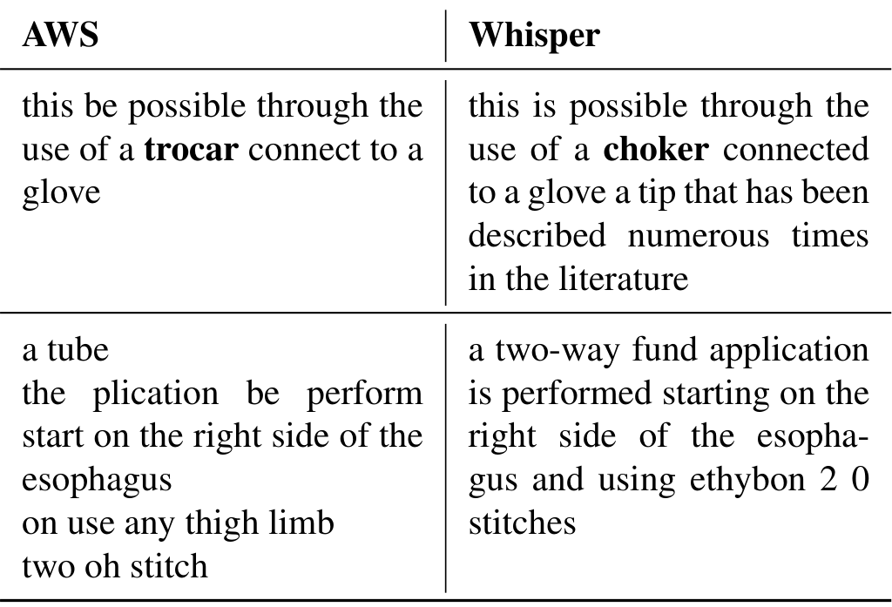
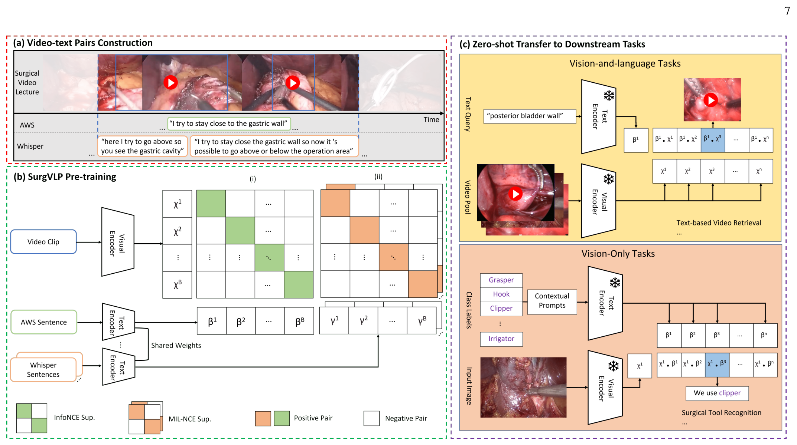
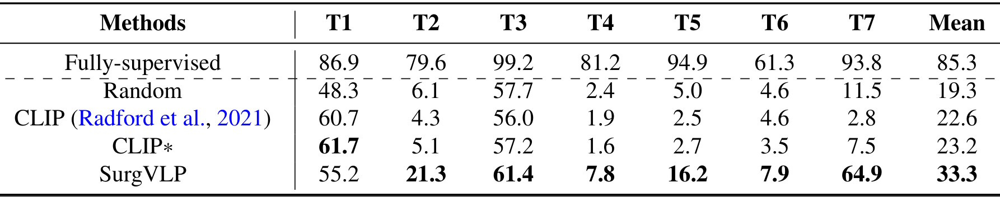

图文解读
1背景与动机
手术视觉模型离不开专家标注，而语言这条监督线几乎没人用过。 已有方法多是任务专用的全监督模型，只在单中心、单术式的数据上验证，只能预测固定类别。
通用视觉领域靠海量图文对训练 CLIP，可以零样本迁移。手术领域没有这种配对数据，人工逐段叙述的成本也承受不起。
作者看中的是开放平台上的手术讲座：讲者边放视频边解说，语音就是现成的文本。难点是这份文本很脏：术语专业，讲者会离题，描述常与画面不同步，语音识别还会把术语认错。
2核心观点速览
两个各有缺陷的语音转写合在一起，比任何一个单独用都更适合当监督信号。
- 医学转写（
AWS Medical Transcribe）术语准但断句差，用来决定在哪里采片段。 - 通用转写（
Whisper）断句好但术语常错，用来决定片段的边界。 - 医学转写句走一对一对比损失，通用转写句走一对多对比损失，以容忍说话和画面不同步。
零样本阶段识别 F1 均值为 24.0，同数据微调的 CLIP* 为 11.5，全监督为 67.3。这意味着它明显强于通用模型，但远不能替代标注。
1,326 个讲座，25,578 个片段-文本对阶段识别 F1：SurgVLP 24.0，CLIP* 11.5，全监督 67.33数据：讲座怎样变成训练对
问题是：没有人工标注，训练对从哪来？
作者在 Websurg 抓取 1,124 个讲座，在 EAES 和 YouTube 人工收集 202 个，共 1,326 个。两路转写都按停顿断句并去掉无名词无动词的句子；医学转写句另做置信度过滤（阈值 0.4）和手术关键词过滤。
结果是医学转写句稀疏而准，通用转写句稠密而顺。最终得到 25,578 个片段-文本对。

原始视频与转写是否公开，论文未说明，这限制了在同一数据上复现。
0.4；每片段配 1 句医学转写、2 句通用转写4方法：采样分工与两种损失
问题是：两份质量不同的文本，怎样各尽其用？
采样分工：先采一句医学转写句，保证片段里有术语；再找时间上重叠的通用转写句，在其合并边界内取中心点，长出最长 10 秒的随机长度片段。
编码：每片段取 4 帧送入 ResNet-50 后平均池化；文本用医学语料预训练的 BioClinicalBert，两路文本共享权重，向量维度都是 768。

损失：医学转写句用 InfoNCE，即批内只有一句正样本；通用转写句用 MIL-NCE，即正样本是一组句子、任一句匹配即可。两者各占一半：
$$\mathcal{L} = \epsilon\,\mathcal{L}_{\text{InfoNCE}} + (1-\epsilon)\,\mathcal{L}_{\text{MIL-NCE}},\quad \epsilon=0.5$$
批大小 80，温度 0.3，约 3 天、4 张 A100。
5零样本怎么用
分类时把类别名改写成句子。 例如工具“钩”写成“我用钩去分离”，阶段写成包含器械、解剖与动作的描述句，三元组用“我用某器械对某目标做某动作”模板。
原因有两个：阶段名本身含义模糊，而预训练文本是完整句子，单个词很少出现。提示词消融显示这套改写在三项任务上都优于直接用类名和 CLIP 默认模板。
检索与定位直接比较文本和片段的余弦相似度。视频描述则只用文本训练解码器，推理时把视频向量当文本向量喂入；解码器结构论文未说明。
6结果说了什么
视觉-语言任务上，SurgVLP 与通用模型拉开了明显差距。
| 方法 | 检索 R@10 | 检索中位秩 | 定位 R@10 |
|---|---|---|---|
CLIP | 2.1 | 256 | 13.9 |
CLIP* | 2.3 | 244 | 15.3 |
| SurgVLP | 16.1 | 70 | 29.7 |
CLIP* 用了同样的数据，检索几乎没有进步。所以收益不只来自数据，还来自文本编码器或训练目标。
纯视觉任务上，它好于通用模型，但离全监督差一半以上。
| 任务 | 全监督 | CLIP* | SurgVLP |
|---|---|---|---|
| 工具识别 mean AP | 85.3 | 23.2 | 33.3 |
| 阶段识别 F1 | 67.3 | 11.5 | 24.0 |
三元组 AP_ivt | 30.8 | 3.7 | 7.0 |

标本袋识别 64.9 最好，剪刀与冲洗吸引器几乎认不出，作者解释为讲座里很少提到它们。描述任务 BLEU-4 只有 0.12，绝对值很低，说明生成的描述与真值措辞重合有限。
R@10：SurgVLP 16.1，CLIP* 2.3三元组 AP_ivt：SurgVLP 7.0，全监督 30.87消融：收益来自哪个设计
| 设置 | 阶段 AP | 三元组 AP | 检索 R@10 |
|---|---|---|---|
| 仅医学转写 | 25.5 | 11.0 | 21.6 |
| 仅通用转写 | 23.5 | 9.1 | 14.4 |
| 双视图 | 26.7 | 10.3 | 25.1 |
| 固定 10 秒 | 17.3 | 9.0 | 18.8 |
| 1 帧 | 19.7 | 9.5 | 18.1 |
双视图在阶段和检索上最好，三元组上却是只用医学转写更好。 作者的解释是三元组只需关键词匹配，术语准确的那一路已经够用。
随机片段长度优于任一固定长度，固定 10 秒最差，因为冗余帧与文本无关。消融在验证集上做，用平均精度而非主结果的 F1，为何改指标论文未说明；每组只跑一次，1 个点左右的差异可能在波动之内。
8为什么有效，哪些解释还没排除
我的判断：双视图的收益可能有相当部分来自更好的片段边界，而不只是损失。 只用一路转写时，片段切分改按该路时间戳，切分规则和损失同时变了，现有实验分不开两者。
同样，SurgVLP 与 CLIP* 的差距可能主要来自医学文本编码器。论文没有做“通用视觉塔加医学文本塔”之类的对照，CLIP* 的微调设置也未说明。
文本编码器实验中 BioClinicalBert 相似度 0.86，CLIP 文本塔 0.69。但它测的是同一时段转写句和元数据句能否被拉近，不是下游精度。
9结果没说什么
- 跨术式的识别迁移没测：纯视觉评测全部是腹腔镜胆囊切除。
- 少样本或线性探测没测：能省多少标注，论文只在未来工作里提及。
- 显著性只覆盖阶段识别：三个种子 t 检验得 t 值
5.03、p 值0.0037，其余任务都是单次结果。 - 检索测试查询经临床协作者纠正，训练文本未纠正，测试条件比训练干净。
- 工具与阶段表的均值列：
CLIP工具识别均值22.6，而七类算术平均约19.0，均值口径论文未说明。
10复现要注意什么
关键词过滤表、停顿符号列表和通用转写模型版本文中没给，片段构建要看代码。医学转写依赖商业服务，换用开源模型时转写误差模式会变，双视图的分工可能需要重新验证。
零样本分类高度依赖手写提示句，换一套提示结果会变；比较不同模型时应固定提示。